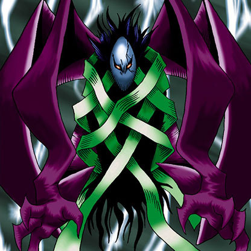

Versago the Destroyer

STATS
ATK: 1100
DEF: 900DECK COST
Deck Cost per Card: 20Fusion List (5 Possible Fusions)
- Versago the Destroyer + Arlownay = Rose Spectre of Dunn
- Versago the Destroyer + Celtic Guardian = Dark Elf
- Versago the Destroyer + Lord of the Lamp = La Jinn the Mystical Genie of the Lamp
- Versago the Destroyer + Psychic Kappa = Kappa Avenger
- Versago the Destroyer + Yamatano Dragon Scroll = Blackland Fire Dragon